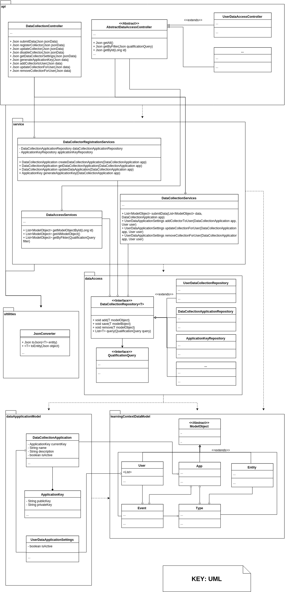

DATA COLLECTION AND DATA STORAGE: MODULE VIEWS
Primary Presentation

Element Catalog
Package: api
This package contains the controllers that expose HTTP RESTful methods. It's purpose is to separate via proxy pattern the access to the rest of the functionality of the macro-component. All the interaction with it is made via JSON and is meant to be implemented exposing it's methods trough HTTP.
- DataCollectionController: This class exposes methods for Data Collection Applications that are used to submit data to the system, it should have a method
void submitData(Json jsonData)that allows an external registered App to submit data to the OpenLAP via defined endpoint, e.g.'/api/submitData'. The methods could vary depending on how the submission process is defined by the developer. This controller also exposes endpoints for General Users to activate and change the settings of the previously registered Data Collection Applications. It also allows to generate theApplicationKeythat contains a public/private key pair for a given application if the user is a Developer/Researcher. - <<Abstract>> AbstractDataAccessController: The name is not a reference to the DAO pattern or similar. This is a controller whose purpose is to separate the data access API functionalities.
- Other controllers: Other controllers are to expose the querying methods of the specific Learning Context Data Model classes.
Package: service
This is a general service package that exposes the business logic to the controllers. If the controllers are a proxy in the sense of the RESTful approach, this Services is a proxy to the internal logic of the Data Collection, Registration, User Data Collection management and Data Querying of the OpenLAP system.
- DataCollectorRegistrationServices: This exposes the services and the business logic for handling the registration of services to the OpenLAP system. It uses objects that are intrinsic to the internal workings and provides exceptions should queries to the database fail. It has two main repositories: the first one to handle the
ApplicationKeythat gets submitted alongside the registration of new Data Collection Applications (and validating that they are valid). The second one aDataCollectionApplicationRepositoryto fetch the available Data Collection applications that exists in the OpenLAP system and their settings. - DataCollectionServices: This method is used to submit data from Data Collection Applications and to handle the user settings regarding what Data Collection Applications they are using and their settings. It should leverage on the
ApplicationKeypublic key to grant access to the submission of data to the OpenLAP system by Third Party Data Collection Applications. - DataAccessServices: Ideally, this Service will have as many
DataCollectionRespositoriesas there are classes in thelearningContextDataModelpackage. The purpose of this class is to realize the querying of relevant data to the main storage of the OpenLAP system and rely it through the classes that extend theAbstractDataAccessController.
Package: dataAccess
- <<Interface>> QualificationQuery: An interface to realize a filtering mechanism through queries. Implementing classes should take into account the output queries of the Indicator Engine, since those will be the queries that will be received by this macro component and one of its main responsibilities is to be able to process those queries. Implementing classes should be provided in order to be used by the data access repositories.
- DataCollectionApplicationRepository: Repository pattern implementation to access the data of
DataCollectionApplicationandUserDataApplicationSettings. - ApplicationKeyRepository: Used to access the collection of the
ApplicationKeys of the system. - UserRepository: Repository pattern implementation to access the
learningContextDataModeldata ofUsertype. - Other repositories: Just as
UserRepositoryallows for Learning Context Data Model access to data, additional repositories are expected in order to cover the total of the classes on thelearningContextDataModelpackage.
Package: utilities
- JsonConverter: An utility class to map JSON from/to model layer objects.
Package: dataApplicationModel
- DataCollectionApplication: The metadata of the Third Party Data Collection Application. Sets if is active and contains at least the public key of the application so data submissions are validated for authentication.
- ApplicationKey: A generated public/private key pair for the external Applications to use during data submission authentication. Ideally only one key pair is active per Data Collection Application. The system should only store the public part of the key.
- UserDataApplicationSettings: Objects of this class are unique per user and represents the list of the Third Party Data Collection Applications that the user is utilizing and their settings.
Package: learningContextDataModel
- <<Abstract>> ModelObject: an abstract class that contains metadata of the Learning Context Data Model classes and allows for abstraction and usage on other layers.
- Learning Context Data Model classes: Each of this classes represents one of the entities exposed on the Learning Context Data Model. It is the true realization of the concept in the OpenLAP system and should be used as the main approach of data handling over the entire solution. If possible this package should be externalized and integrated to the other macro components for general use.
Context Diagram
As part of the Open Learning Analyics Platform, this macro components is twofold, it allows the interaction of Third Party Data Collection Applications to submit data and allows other parts of the system to interact and access the collected data. A representation within the context of the OpenLAP macro components is given in the figure, highlighting the parts explained in this section.

Variability Guide
- The
utilitiespackage mos likely can be replaced with an implementation of Gson package. - The
ApplicationKeycould be separated to provide different objects for public and private keys or it can use a token framework.
Rationale
This macro component uses the general layered architectural style. An API layer exposes the services through controllers that publish endpoints for interactions with users or other macro-components. A Service layer takes care of integrating business logic to the queries and data submission. A Data Access layer groups multiple repositories that allow uncoupled data querying and a Model layer is used to provide containers for all the data objects an Object Mapping to the data fetched from the databases.
The separation between the two model packages is for functional purposes. The learningContextDataModel package contains a realization of the Learning Context Data Model described in Learning Analytics (Lukarov et al. 2014) and is expected to be heavily used, since it is what allows to realize containers for the bulk of the data for the OpenLAP system. On the other hand, the dataApplicationModel package is used for storing relevant information for the user settings regarding registration and usage of Third Party Data Collection Applications.
The Data Collection and Storage of the OpenLAP is a crucial element of realizing the Learning Analytics exercise, therefore, a mechanism for designing a flexible data-store that scales, can cope with new data sources and can provide rapid access to the data consumers and submitter is crucial for the application.
The Data Collection and Data Store component have been conceived as a single element since their responsibilities relate to accessing and providing data for the system.
Related Views
- Section 4.1.2. explains the main Components and Connectors of this macro component and how it is intended to interact with other macro components.